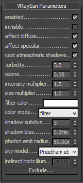

VRaySun
VRaySun and VRaySky Overview
The VRaySun and VRaySky are special features which are provided by the V-Ray renderer. Developed to work together, the VRaySun and VRaySky reproduce the real-life Sun and Sky environment of the Earth. Both are coded so that they change their appearance depending on the direction of the VRaySun.
The V-Ray Sun and Sky are based largely on the model presented in [ 1 ]. For a more complete list of references, please see the References and links section.
Example: Direction of the VRaySun Light
Note: All the images below are rendered with Color mapping: HSV exponential, Dark multiplier: 1.0, Bright multiplier: 1.0 unless otherwise noted.
This example demonstrates the effect of the sun direction. Note how in addition to the scene brightness, the sun position also changes the appearance of the sky and the sun light color.
Enabled: on, Turbidity: 3.0, Shadow subdivision: 8, Intensity multiplier: 0.01, Size multiplier: 1.0.

Sun Z height: 500
Sun Z height: 1600

Sun Z height: 6000 (almost straight above)
VRaySun Parameters
 The VRaySun is located in the (Create - Lights - VRay) panel.
You can also specify the VRaySun as the sun type inside a 3ds Max Daylight system.
Enabled - turns on and off the sun light.
Invisible - when on, this option makes the sun invisible, both to the camera and to reflections. This is useful to prevent bright speckles on glossy surfaces where a ray with low probability hits the extremely bright sun disk.
affect diffuse - this determines whether the VRaySun is affecting the diffuse properties of the materials.
affect specular - this determines whether the VRaySun is affecting the specular of the materials.
cast atmospheric shadows - when enabled atmospheric effects in the scene will cast shadows
Turbidity - this parameter determines the amount of dust in the air and affects the color of the sun and sky. Smaller values produce a clear and blue sky and sun as you get in the country, while larger values make them yellow and orange as, for example, in a big city.
Example: The Turbidity Parameter
This example demonstrates the effect of the Turbidity parameter. Generally, this controls the amount of dust particles in the air. Notice how larger values cause the sun and the sky to become yellowish while smaller values make the sky clear.
Enabled: on, Intensity multiplier: 0.01, Shadow subdivision: 8, Size multiplier: 1.0
Turbidity is 2.0
Turbidity is 4.0
Turbidity is 8.0
Ozone - this parameter affects the color of the sun light. Available in the range between 0.0 and 1.0. Smaller values make the sunlight more yellow, larger values make it blue.
Example: Ozone Value
The Ozone parameter affects only the color of the light emitted by the sun. Higher values cause the color mapping mode to change. This example demonstrates the looks achieved with several different color mapping modes. See also the section on
Color mapping
for more details.
Enabled: on, Turbidity: 2.0, Shadow subdivision: 36, Intensity multiplier: 0.01, Size multiplier: 10.0.
Ozone: 0.0
Ozone: 0.5
Ozone: 1.0
Intensity multiplier - this is an intensity multiplier for the VRaySun. Since the sun is very bright by default, you can use this parameter to reduce its effect. See the Notes section for more information.
Example: The Intensity Multiplier Parameter
Enabled: on, Turbidity: 3.0, Shadow subdivision: 8, Size multiplier: 1.0
Height: Z = 0, Intensity mult: 0.01
Height: Z = 0, Intensity mult: 0.03
Height: Z = 0, Intensity mult: 0.05
Height: Z = 500, Intensity mult: 0.01
Height: Z = 500, Intensity mult: 0.03
Height: Z = 500, Intensity mult: 0.05
Size multiplier - this parameter controls the visible size of the sun. This affects the appearance of the sun disc as seen by the camera and reflections, as well as the blurriness of the sun shadows.
Example: The Size Multiplier Parameter
This example demonstrates the effect of the Size multiplier parameter. Notice how changes in this parameter affect both the visible sun size and the shadow softness (however overall illumination strength remains the same).
Enabled: on, Turbidity: 3.0, Shadow subdivision: 8, Intensity multiplier: 0.01
Size multiplier is 4.0
Size multiplier is 10.0
Size multiplier is 40.0
Filter color -this option allows you to change the color of the sun and depends on the Color mode parameter
Color mode - this option affects the way the color in the Filter color parameter affects the color of the sun
-
Filter - this option allows the user to shift the hue of the V-Ray Sun and Sky system towards the color specified in the Filter color field
-
Direct - this option sets the color of the V-Ray sun to match the color in the Filter Color parameter. In this case the intensity of the light does not depend on the V-Ray Suns position in the sky and is controlled through the intensity multiplier.
-
Override - this option sets the color of the V-Ray sun to match the color in the Filter Color parameter but the intensity of the of the light still depends on the V-Ray Suns position in the sky .
Shadow subdivs - this controls the number of samples for the area shadow of the sun. More subdivs produce area shadows with better quality but render slower.
Example: The Shadow Subdivs Parameter
This example demonstrates the effect of the Shadow subdivs parameter. Note how lower subdivs cause the shadows to be more noisy.
Enabled: on, Height Z: 1200, Turbidity is 2.0, Intensity multiplier is 0.01, Size multiplier: 10.0
Shadow subdivs is 8
Shadow subdivs is 16
Shadow subdivs is 48
Shadow bias - moves the shadow toward or away from the shadow-casting object (or objects). If the bias value is too low, shadows can "leak" through places they shouldn't, produce moire patterns or making out-of-place dark areas on meshes. If the bias is too high, shadows can "detach" from an object. If the bias value is too extreme in either direction, shadows might not be rendered at all.
Example: Shadow Bias
Enabled: on, Turbidity: 2.0, Shadow subdivision: 36, Intensity multiplier: 0.01, Size multiplier: 10.0
Shadow bias: 0.0
Shadow bias: 7.0
Shadow bias: 13.0
Photon emit radius - determines the radius of the area where photons would be shot. This area is represented by the green cylinder around the Sun's ray vector. This parameter's effect is visible when photons are used in the GI solutions or caustics.
Sky Model - allows you to specify the procedural model that will be used to generate the VRaySky texture.
-
Preetham et al. - when this mode is selected, the VRaySky procedural texture will be generated based on the Preetham et al. method.
-
CIE Clear - when this mode is selected, the VRaySky procedural texture will be generated based on the CIE method for clear sky.
-
CIE Overcast - when this mode is selected, the VRaySky procedural texture will be generated based on the CIE method for cloudy sky
Indirect horiz. illum. - specifies the intensity (in lx) of the illumination on horizontal surfaces coming from the sky.
Exclude - this button allows you to exclude objects from illumination/shadow casting for the sun light.
VRaySky Parameters
The VRaySky texture map is typically used as an environment map, either in the 3ds Max Environment dialogue, or in one of the slots of the V-Ray Environment rollout and behaves very much like a HDRI environment map. The VRaySky changes its appearance based on the position of the VRaySun.
Manual sun node - specifies how the VRaySky determines its parameters:
-
Off - the VRaySky will automatically take its parameters from the first enabled VRaySun in the scene. In this case, none of the other parameters of VRaySky are accessible.
-
On - you can choose a different light source. It is recommended that you choose only direct lights, as the vector for the direction is taken into consideration when computing the appearance of the sky. In that case theVRaySun is no longer controlling the VRaySky and the parameters in the texture map rollout determine the final look of the sky.
Sun node - specifies which light source is chosen if Specify sun node is On.
Sun turbidity - refer to VRaySun parameters
Sun ozone - refer to VRaySun parameters
Sun intensity multiplier - refer to VRaySun parameters
Sun size multiplier - refer to VRaySun parameters
Sun invisible - when this option is on, the sun disk will not be visible on the sky texture.
Sky Model - Allows you to specify the procedural model that will be used to generate the VRaySky texture.
-
Preetham et al. - when this mode is selected, the VRaySky procedural texture will be generated based on the Preetham et al. method.
-
CIE Clear - when this mode is selected, the VRaySky procedural texture will be generated based on the CIE method for clear sky.
-
CIE Overcast - when this mode is selected, the VRaySky procedural texture will be generated based on the CIE method for cloudy sky.
Indirect horiz. illum. - specifies the intensity (in lx) of the illumination on horizontal surfaces coming from the sky.
Example: VRay Sun and Sky with Different Color Mapping Types
In addition to the parameters of the sun and sky, their appearance also depends on the selected color mapping mode. This example demonstrates the looks achieved with several different color mapping modes. See also the section on Color mapping for more details.
Enabled: on, Height Z: 800, Turbidity: 3.0, Shadow subdivision: 8, Intensity multiplier: 0.01, Size multiplier: 1.0
Color mapping: Linear
Color mapping: Exponential
Color mapping: HSV exponential
Color mapping: Intensity exponential
Notes
-
By default, the VRaySun and VRaySky are very bright. In the real world, the average solar irradiance is about 1000 W/m^2 (see the references below). Since the image output in V-Ray is in W/m^2/sr, you will typically find that the average RGB values produces by the sun and the sky are about 200.0-300.0 units. This is quite correct from a physical point of view, but is not enough for a nice image. You can either use Color mapping to bring these values to a smaller range (which is the preferred way) or you can use the Sun intensity multiplier to make the sun and sky less bright. Using the VRayPhysicalCamera with suitable values also produces a correct result without changing the sun and sky parameters.
References and links
Here is a list of links and references about the V-Ray Sun and Sky implementation, as well as general information about the illumination of the Sun.
-
[1] A.J. Preetham, P. Shirley, and B. Smits, A Practical Analytic Model for Daylight, SIGGRAPH 1999, Computer Graphics Proceedings;
An online version can be found at http://www.cs.utah.edu/~shirley/papers/sunsky/
This paper includes source code examples and is the base for the VRaySun and VRaySky plugins. -
[2] R. H. B. Exell, The intensity of solar radiation, 2000
This page is available at http://www.jgsee.kmutt.ac.th/exell/Solar/Intensity.html
This page contains information about the average intensity of the solar radiation, as well as some specific measurements. -
[3] R. Cahalan, Sun & Earth Radiation
This page can be found at http://climate.gsfc.nasa.gov/static/cahalan/Radiation/
These pages contain a list of accurate solar irradiances across a large portion of the electromagnetic spectrum. -
[4] D. Robinson-Boonstra, Venus Transit: Activity 3, Sun & Earth Day 2004
This document can be found online at
http://sunearth.gsfc.nasa.gov/sunearthday/2004/2004images/VT_Activity3.pdf
Among other things, this document gives the distance from the Sun to the Earth and the size of the Sun derived from astronomic observations.